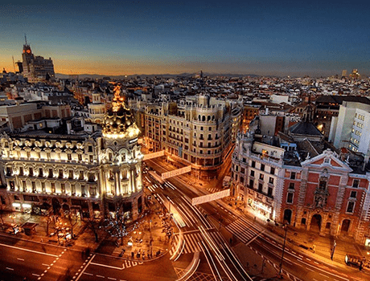
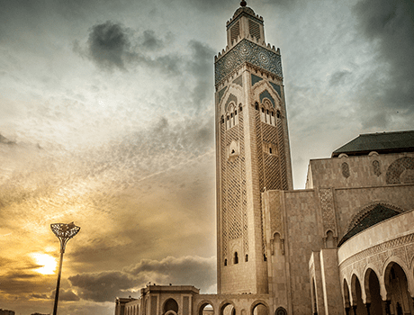

Troisième destination touristique du Maroc,Casablanca est aussi la plus grande ville du pays et sa capitale économique. Cette ville moderne et dynamique située sur la côte Atlantique est réputée pour ses plages mais aussi pour ses sites touristiques tels que la célèbre mosquée Hassan II. 
Loin des clichés habituels concernant le Maroc, la ville de Casablanca est la vitrine d’un pays moderne et dynamique. Située à environ 80 km au sud de Rabat la capitale administrative, la "ville blanche" est la première ville et agglomération du pays. Elle est aussi une destination incontournable pour le tourisme d’affaires et de loisir avec son terrain de golf, ses hammams traditionnels, ses piano-bars, ses cafés, ses discothèques ainsi que ces monuments touristiques. 
Le parc de la Ligue arabe est un parc situé à Casablanca, au Maroc et qui est en rénovation depuis mars . D'après plusieurs sites web, les travaux devraient être fini en . Ce poumon vert de Casablanca qui s’étend sur 30 hectares est aujourd’hui en pleins travaux de réhabilitation. L'avancement des travaux est d'environ 80 % et la date de fin des travaux prévue entre mars et septembre .En étant casablancais, je pourrai vous assurer que le parc de la Ligue arabe est un des espaces emblématiques du centre-ville de Casablanca
L’Église NDdL est une église paroissiale catholique située à Casablanca au Maroc. Elle a été construite en par Achille Dangleterre et l'ingénieur Gaston Zimmer et constitue la deuxième église de Casablanca après l'église du Sacré-Cœur qui n'est plus affectée au culte aujourd'hui. Elle est notamment fréquentée par de nombreux fidèles d'Afrique sub-saharienne
La mosquée Hassan-II est une mosquée située à Casablanca. Érigée en partie sur la mer, elle est un complexe religieux et culturel, aménagé sur neuf hectares et comporte une salle de prières, une salle d'ablutions, des bains, une école coranique(madrasa), une bibliothèque et un musée. La salle de prière peut accueillir 25 000 fidèles d'une superficie totale de 20 000 m2. et l'esplanade 80 000 fidèles (l'ensemble complet peut accueillir 105 000 personnes). La mosquée Hassan-II,bati entre et , est l'une des plus grandes mosquées du monde, et possède un minaret d'une hauteur de 200 à 210 m selon les sources. Des artisans recrutés dans toutes les villes du royaume avaient sculpté 53 000 m2 de bois et assemblé plus de 10 000 m2 de céramiques (zellige) pour le lieu de culte. Un toit ouvrant de grande dimension permet, selon le vœu du roi Hassan II, de relier cet édifice à l'air, considéré comme l'un des quatre éléments bénéfiques à la vie, avec la terre, le feu et l'eau. Conçue par l'architecte Michel Pinseau, elle a été édifiée par le groupe français Bouygues, la maîtrise d'ouvrage étant assurée par le ministère de l'Intérieur, à l'époque dirigé par Driss Basri.
L'îlot de Sidi Abderrahman est un rocher situé à quelques mètres de la corniche de Casablanca. Il abrite la koubba d'un marabout nommé Sidi Abderrahman. L'île est habitée par quelques voyantes qui lisent l’avenir dans les lignes de la main ou dans du plomb fondu. La légende dit que Sidi Abderrahmane, un homme saint originaire de Bagdad, y a échoué et vécu au XIXème siècle. Pieux et solitaire, cet homme aimait le contact avec la mer et la nature. Il se serait retiré sur cette île afin de fuir un monde qu'il trouvait trop cruel. Il vécut donc sur son île, priant jour et nuit et fut si généreux et serviable, qu’on décida de lui bâtir une maison. Le saint homme, préférant dormir à la belle étoile, refusa d'y loger. Dès lors, sa demeure devint une maison d'accueil pour tous les pèlerins. Sidi Abderrahmane avait le pouvoir de marcher sur l’eau et pouvait ainsi voyager à travers des mondes accessibles à lui seul.
Le Morocco Mall est un centre commercial inauguré à Casablanca au Maroc le. Il s'étale sur une surface dédiée totalisant 200 000 m2 d'espaces de loisirs, restaurants et d'enseignes le hissant au premier rang de sa catégorie à l'échelle du continent africain . En , le Morocco Mall a reçu à Cannes le prix MIPIM Award dans la catégorie du meilleur centre commercial sur le plan architectural. L'investissement des groupes Nesk Investment filiale de la multinationale saoudienne Al Jedaie, Akwa et Aksal le maitre d'ouvrage dans ce projet s'élève à deux milliards de dirhams (soit environ 236 millions de dollars). Le classement dans le Top 5 mondial du Morocco Mall en 2011 fut conforté par la richesse de son offre en termes de commerces (Marjane, Fnac, Galeries Lafayette, etc.) et de loisirs (un parc Adventureland, 3ème aquarium parmi les plus grands au monde, 4ème plus grande fontaine musicale au monde, une patinoire, etc.). En outre, L'architecture des Galeries Lafayette du Morocco Mall a inscrit cet édifice au Guinness World Record ™ pour la plus grande façade de magasin au monde érigée dans un mall.
Quand on clique sur le lien Climat atlantique oceanique,dans la carte des climats mondiaux, Casablanca ainsi que toute la cote atlantique marocaine n'a pas un climat oceanique selon les criteres de la classification de Koppen. Selon cette classificationn, Le climat de Casa est plutot mediterranean Csa comme celui du Cap en Afrique du sud ou de Los-Angeles en Californie: hivers doux et pluvieux avec etes relativement chauds et secs (sans pluie). Voici la température à Casablanca pendant tout les mois de l'année à Casablanca.Comme vous le constatez c'est un beau climat
| Janvier | Fevrier | Mars | Avril | Mai | Juin | Juillet | Aout | Septembre | Octobre | Novembre | Decembre | |
|---|---|---|---|---|---|---|---|---|---|---|---|---|
| Température moyenne (°C) | 12.4 | 13.1 | 14.7 | 16 | 18.2 | 20.6 | 22.4 | 23.3 | 21.9 | 19.7 | 16.1 | 13.4 |
| Température minimale (°C) | 7.4 | 7.8 | 9.5 | 11 | 13.6 | 16.3 | 18.4 | 19 | 17.4 | 14.5 | 11.1 | 8.4 |
| Température maximale (°C) | 17.4 | 18.4 | 20 | 21.1 | 22.8 | 25 | 26.5 | 27.6 | 26.5 | 24.9 | 21.2 | 18.5 |